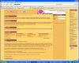
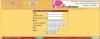
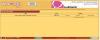

Vous voulez envoyer un mail à tous vos membres pour une occasion particulière (Noël, jour de l'an, Halloween, résultat d'un concours, sortie d'un album, d'un livre, etc.) ? Je vais vous apprendre dans ce tutoriel à vous servir du site webcron pour faire un envoi automatisé et rapide. Il faudra dans un premier temps rédiger notre code puis ensuite nous inscrire et le soumettre à webcron.
Ce tutoriel vous permettra donc de maîtriser le site webcron, qui est très utile, ainsi que de revoir de nombreuses petites fonctions bien utiles en PHP. :)
Rédigeant ce tutoriel en période de fêtes de fin d'année, je vous propose de prendre comme exemple l'envoi d'un e-mail à 23 h 59 le 24/12/06 pour souhaiter un joyeux Noël à tous vos membres.
Pour réaliser ceci, on va commencer par rédiger notre code (dans le fichier mail-noel.php).
On poursuivra ensuite par une petite visite du site webcron pour finir de réaliser notre projet.
Un peu de culture
Tout d'abord, il faut savoir que le site webcron n'est pas indispensable pour réaliser l'envoi de ce mail, il existe plusieurs manières de procéder. La première est la méthode manuelle. C'est très simple ; à l'heure voulue, vous allez sur votre page pour exécuter le script. Le seul problème est que vous devez donc être là pour le déclencher. :( Et je pense que le jour de Noël, vous avez d'autres choses à faire, non ? :p
La deuxième méthode consiste donc à créer ce que l'on appelle un cron. Je vous entends déjà dire « mais qu'est-ce qu'il raconte, lui, là-bas derrière son écran, il parle chinois ? :D ». Non, je ne parle pas chinois.
Je ne vous en dis pas plus sur le fait que le cron soit un daemon, ça n'a pas d'utilité dans ce tutoriel. Vous pouvez cependant lire l'article complet et intéressant à son sujet.
Le site webcron fait donc exactement la même chose, par Internet. L'avantage de le faire par le site est que grâce à cela, nous n'avons pas besoin d'avoir un serveur dédié pour utiliser les merveilleux crons. Eh oui, malheureusement, je ne connais aucun hébergeur mutualisé qui accepte les crons, car cela entreprendrait une modification des fichiers du système.
Voilà : je pense que vous êtes maintenant prêt pour commencer et que vous savez où l'on va (enfin je l'espère, car pas moi :p ).
Nous allons donc dans cette sous-partie nous attarder sur le code nécessaire au bon fonctionnement du projet.
Il faut savoir que pour des raisons de sécurité, nous allons vérifier que nous sommes bien à la date et l'heure voulue. Sinon, des petits malins découvrant le fichier auraient vite fait de l'activer et vos membres recevraient tous ce mail avant l'heure. :-°
Nous allons donc voir le code par étapes.
<?php
$timestamp_noel = mktime(23, 00, 00, 12, 24, 2006); // On initialise le timestamp lorsqu'il sera à Noël
J'utilise ici la fonction mktime pour récupérer le timestamp de Noël 2006. Ici, j'ai choisi de prendre le 24 décembre 2006 à 23 h 00 et 00 sec. Je mets cette heure-ci car il n'est pas possible de choisir les minutes sur le site webcron. Eh oui, c'est moins précis que si vous le faisiez sur votre serveur dédié.
Notez que si vous souhaitez réutiliser votre script, vous pouvez mettre l'année dans une variable, comme ceci :
J'ai choisi de définir juste après nos variables message et sujet, contenant le message que vous allez envoyer à vos membres.
<?php
$message = '
<html>
<head>
</head>
<body>
<h1>Joyeux Noël et très bonnes fêtes de fin d\'année</h1>
<p>Toute l\'équipe de [votre site] vous souhaite de très bonnes fêtes de fin d\'année, en espérant une très bonne nouvelle année</p>
<p>Blabla, blabla, etc.</p>
</body>
</html>
';
$sujet = 'Joyeux Noël';
Vous mettez ce que vous souhaitez dans votre code, pour annoncer d'éventuelles nouveautés, un concours ou autre chose.
Ensuite, nous allons nous attaquer aux headers ; c'est quelque chose d'obligatoire pour le bon envoi de votre e-mail. Je ne vous demanderai pas de comprendre ce morceau de code, sachez juste qu'il va permettre de régler le format de l'e-mail, pour que le HTML soit pris en compte et que les caractères s'y affichent normalement.
Avant de passer au reste, il nous faut vérifier si la date actuelle est la même que celle précédemment évoquée.
Nous le faisons donc simplement grâce à un if.
<?php
if(time() == $timestamp_noel) // Pour plus de sécurité, on compare le timestamp actuel à celui de Noël
{
//Notre code d'envoi d'e-mail
}
Nous passons maintenant au listage des e-mails de vos membres :
<?php
mysql_connect("localhost", "login", "*****");
mysql_select_db("bdd");
$req = mysql_query("SELECT mail FROM membres");
Maintenant, il est simple d'envoyer notre message à chaque membre grâce à une boucle while.
<?php
while($mail = mysql_fetch_array($req))
{
mail($mail['mail'], $sujet, $message, $headers);
echo 'Mail bien envoyé à '.$mail['mail'].'';
}
Voilà : à présent, votre script est prêt à fonctionner. Pour le compléter, je vous propose juste un petit else.
<?php
else
{
echo 'Désolé, c\'est pas le bon jour. :p';
}
mysql_close();
?>
Allez : comme cadeau de Noël de ma part, je vous offre le code en entier.
<?php
$timestamp_noel = mktime(23, 59, 15, 12, 24, 2006); // On initialise le timestamp qu'il sera à Noël
$message = '<html>
<head>
</head>
<body>
<h1>Joyeux Noël et très bonnes fêtes de fin d\'année</h1>
<p>Toute l\'équipe de Image-Studio vous souhaite de très bonnes fêtes de fin d\'année en espérant une très bonne nouvelle année</p>\n
<p>Pas mal de nouveautés sont à prévoir cette année sur le site, et nous vous rappelons que le site dispose d\'un forum communautaire pour partager vos passions</p>
</body>
</html>
';
$sujet = 'Joyeux Noël';
$headers = 'MIME-Version: 1.0' . "\r\n";
$headers .= 'Content-type: text/html; charset=iso-8859-1' . "\r\n";
if(time() == $timestamp_noel) // Pour plus de sécurité, on compare le timestamp actuel à celui de Noël
{
mysql_connect("localhost", "login", "******");
mysql_select_db("bdd");
$req = mysql_query("SELECT * FROM mail");
while($mail = mysql_fetch_array($req))
{
mail($mail['mail'], $sujet, $message, $headers);
echo 'Mail bien envoyé à '.$mail['mail'].'';
}
}
else
{
echo 'Désolé c\'est pas le bon jour :p';
}
mysql_close();
?>
Nous pouvons maintenant passer à la seconde partie.
Eh oui ! Il ne manquait que lui pour conclure notre projet. Alors tout d'abord, voici l'adresse du site : Webcron.org.
(Cliquez sur l'image pour l'agrandir) Je ne vous en refais pas de présentation. Inscrivez-vous, cette étape ne devrait pas poser trop de problèmes. :p Une fois ceci réalisé et l'inscription confirmée, connectez-vous à votre compte. Rendez-vous ensuite sur la page Mes tâches, et cliquez sur Nouvelle tâche. Vous devriez avoir la page suivante qui apparaît.
Remplissez le champ URL en mettant l'URL du fichier d'envoi de mail. Ensuite, ne remplissez pas login et mot de passe, renseignez l'heure, la date, le mois, le jour, etc. Puis validez, vous devriez obtenir ceci :
Et voilà : maintenant, tout est prêt pour que vos membres reçoivent un joli petit mail. Vous pouvez le modifier un peu en y ajoutant des couleurs, etc.
Voilà qui conclut mon premier tutoriel ; si vous avez des commentaires, surtout n'hésitez pas à laisser une note et un commentaire.
J'espère que cela vous aura permis de faire de bien jolis petits codes pour le plaisir de vos membres. C'est dommage que l'envoi ne puisse se faire sur webcron à la minute près, mais bon ce n'est pas très grave.
Webcron propose aussi la fonction tester, qui permet de voir si tout est « OK » avant l'heure.
{kind=link}
{kind=link}
{kind=link}